長期トレンド
JKMとJEPXシステムプライスの推移グラフ
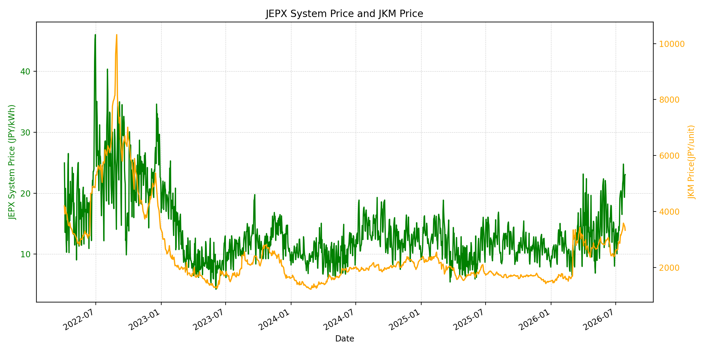
WTIの推移グラフ
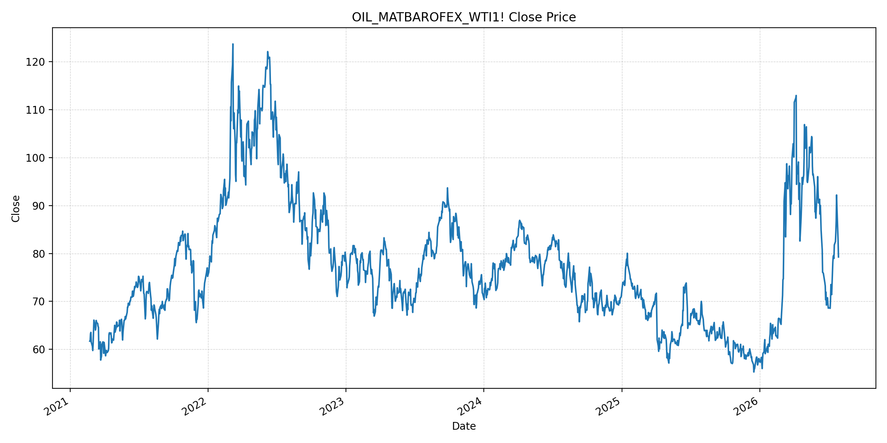
JEPXエリアプライスグラフ（直近一年分）
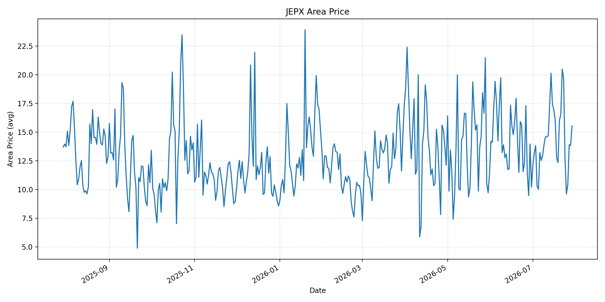
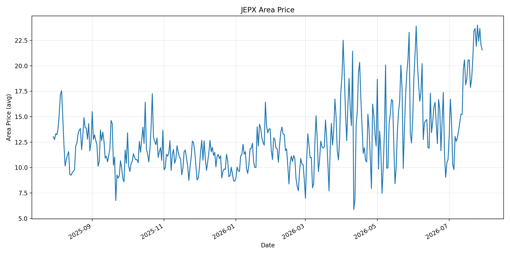
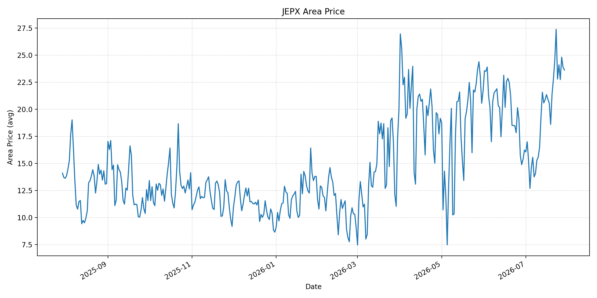
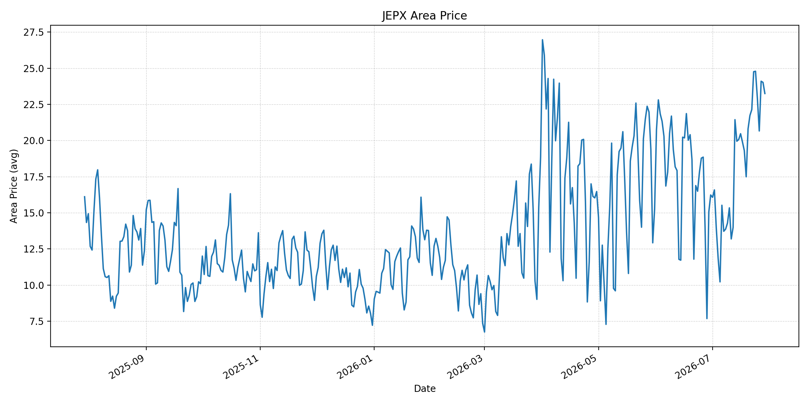
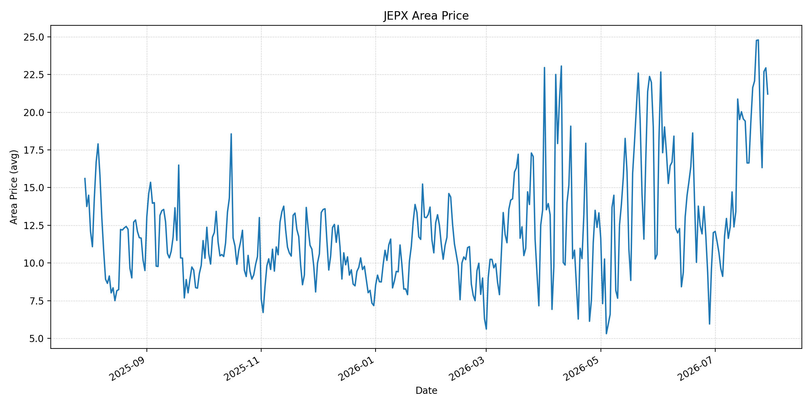
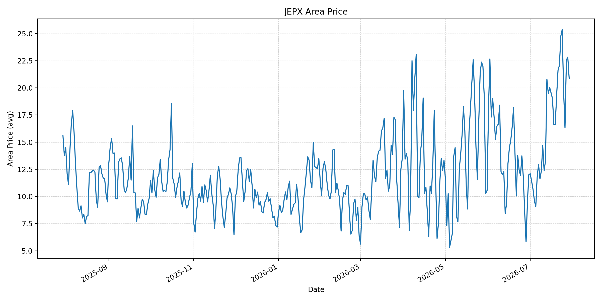
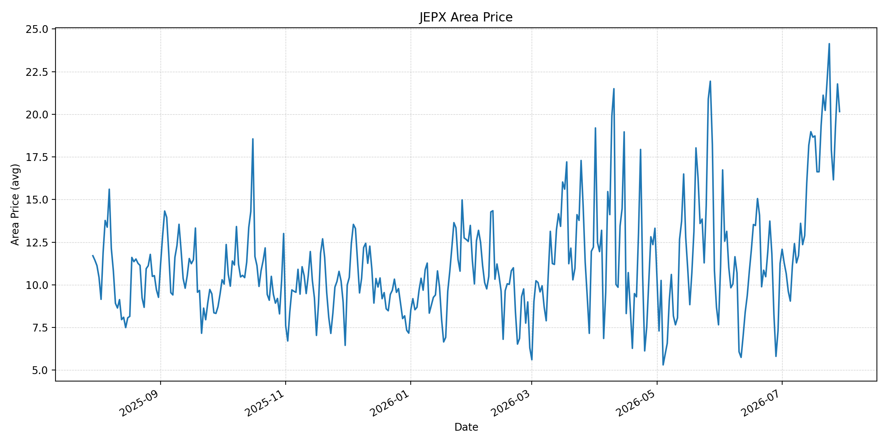
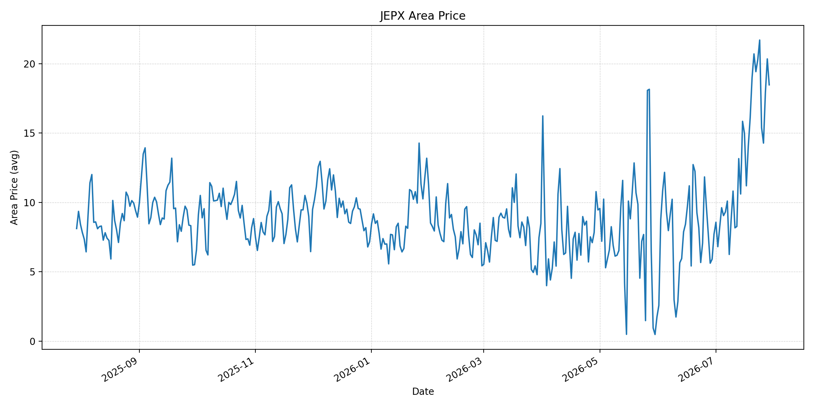
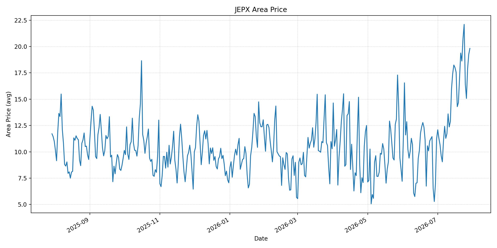
短期トレンド
JKMとJEPXシステムプライスの推移グラフ
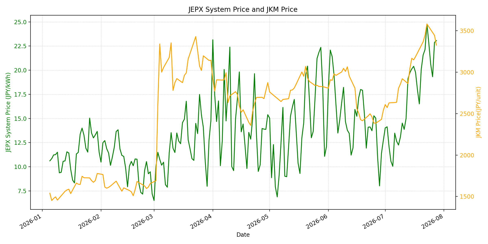
WTIの推移グラフ
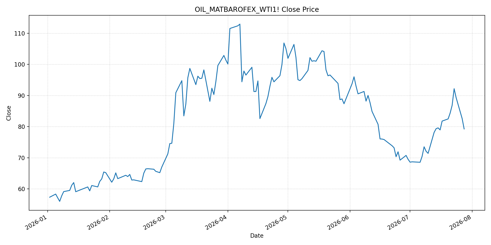
JEPXシステムプライス
JEPXは受渡日ベースの最新非空値で評価しています。最新値は 2026-07-29 分です。先週終値は 2026-07-22 時点の直近値、先月終値は 2026-06-30 時点の直近値で評価しています。
| エリア | 当日価格 | 前日価格 | 前日比（％） | 先週終値 | 先週比（％） | 先月終値 | 先月比（％） | 過去最高値 | 最高値比（％） |
|---|---|---|---|---|---|---|---|---|---|
| システム | 22.40 | 23.06 | -2.86 | 22.13 | 1.22 | 12.73 | 75.96 | 64.06 | -65.03 |
| 北海道 | 15.53 | 13.84 | 12.21 | 20.49 | -24.21 | 10.21 | 52.11 | 73.92 | -78.99 |
| 東北 | 21.56 | 22.05 | -2.22 | 23.45 | -8.06 | 10.78 | 100.00 | 84.92 | -74.61 |
| 東京 | 23.62 | 23.87 | -1.05 | 24.53 | -3.71 | 16.23 | 45.53 | 86.13 | -72.58 |
| 中部 | 23.25 | 24.02 | -3.21 | 22.14 | 5.01 | 16.23 | 43.25 | 52.06 | -55.34 |
| 北陸 | 21.20 | 22.94 | -7.59 | 22.07 | -3.94 | 12.01 | 76.52 | 46.48 | -54.39 |
| 関西 | 20.88 | 22.83 | -8.54 | 22.07 | -5.39 | 12.00 | 74.00 | 46.48 | -55.08 |
| 中国 | 20.16 | 21.78 | -7.44 | 20.23 | -0.35 | 11.26 | 79.04 | 46.48 | -56.63 |
| 四国 | 18.48 | 20.35 | -9.19 | 19.43 | -4.89 | 7.72 | 139.38 | 46.48 | -60.25 |
| 九州 | 19.82 | 19.25 | 2.96 | 18.62 | 6.44 | 11.24 | 76.33 | 40.54 | -51.11 |
LNG先物価格
最新値は 2026-07-28 の LNG(close) です。前日価格は直近非空値の 2026-07-27、先週終値は 2026-07-21 時点の直近値、先月終値は 2026-06-30 時点の直近値で評価しています。
| 当日価格 | 前日価格 | 前日比（％） | 先週終値 | 先週比（％） | 先月終値 | 先月比（％） | 過去最高値 | 最高値比（％） |
|---|---|---|---|---|---|---|---|---|
| 3327.00 | 3445.00 | -3.43 | 3367.00 | -1.19 | 2541.00 | 30.93 | 10319.00 | -67.76 |
石油先物価格
最新値は 2026-07-28 の OIL(close) です。前日価格は直近非空値の 2026-07-27、先週終値は 2026-07-21 時点の直近値、先月終値は 2026-06-30 時点の直近値で評価しています。
| 当日価格 | 前日価格 | 前日比（％） | 先週終値 | 先週比（％） | 先月終値 | 先月比（％） | 過去最高値 | 最高値比（％） |
|---|---|---|---|---|---|---|---|---|
| 79.26 | 82.61 | -4.06 | 84.34 | -6.02 | 69.50 | 14.04 | 123.70 | -35.93 |
ニュース
イラン情勢に関するニュース
- 2026年7月29日、APは、イランが中東の米軍部隊を狙って弾道ミサイルを発射し、米軍が全弾を迎撃したと報じました。数日間続いた攻撃停止は崩れ、ホルムズ海峡を巡る緊張が再び高まっています。 参照: AP, 2026-07-29
- Guardianは、米国の対イラン空爆停止は軍事力だけでは目的達成が難しいことを示し、イランがミサイル・ドローン能力と地理的優位を残していると分析しました。交渉余地は残るものの、再エスカレーションの確率は下がっていません。 参照: Guardian, 2026-07-29
ホルムズ海峡経由の石油・LNGに関するニュース
- WSJは、イランがオマーン提案のホルムズ海峡管理案を拒否し、同海峡のより大きな管理権を求めたと報じました。通航レーンと将来の通航料を巡る対立は、ホルムズ経由の原油・LNG輸送に残る最大の不確実性です。 参照: WSJ, 2026-07-29
- WSJは、米・イラン交渉期待とホルムズ再開観測を背景に原油先物が3営業日続落し、WTIが79.26ドル、Brentが84.09ドルで引けたと報じました。ただし、市場は一時的な平穏を織り込んでいるだけで、攻撃再開時の反発リスクは残ります。 参照: WSJ, 2026-07-29
ホルムズ海峡経由でない石油・LNGに関するニュース
- Guardianは、フーシ派によるバブエルマンデブ海峡の封鎖リスクで、アジアのエネルギー危機が悪化していると報じました。日本、韓国、フィリピン、タイなどは中東依存が高く、紅海側の迂回路も保険料と輸送日数を押し上げています。 参照: Guardian, 2026-07-28
- WSJは、中国がイラン・サウジ双方との関係を使い、中東産油の確保を続けていると報じました。買い手間の調達力格差が広がると、日本を含む他のアジア需要家にはスポット調達コストの上昇圧力が残ります。 参照: WSJ, 2026-07-29
日本国内のイラン戦争に関係するニュース
- 過去24時間で、JEPX制度、国内電力需給ルール、または日本政府のイラン戦争関連対策を直接変更する主要な新規公表は確認できませんでした。
- 関連する国内材料として、JOGMECは7月27日に、7月20〜24日の北東アジアJKMが中東緊張と供給不安で上昇し、7月24日時点でも低い22ドル台/MMBtuにとどまったと整理しました。また、経済産業省は石油製品備蓄と調達先多様化を検討する作業部会を7月24日に設置しています。 参照: JOGMEC, 2026-07-27 / Jiji Press / Nippon.com, 2026-07-24
インサイト
ニュース事項による日本の電力市場への影響（短期：数日〜1週間）
- JEPXシステムプライスは 22.40 円/kWhで前日比 -2.86% と下落しましたが、先月比は 75.96% 高いままです。OILは 79.26 まで下げましたが、ホルムズ管理案の不調とイランのミサイル発射で、燃料リスクの完全な解消とは言えません。
- LNGは最新非空値で 3327.00、前回比 -3.43%、先週比 -1.19% です。足元は落ち着きつつありますが、JOGMECが示すJKMの高止まりと紅海側の輸送不安を踏まえると、数日〜1週間の電力スポットは急低下よりも高値圏での調整が中心になりやすいです。
- エリア別では北海道が前日比 12.21%、九州が 2.96% 上昇した一方、関西は -8.54%、四国は -9.19% です。日次需給で地域差はありますが、東京 23.62 円/kWh、中部 23.25 円/kWhは高く、火力燃料のリスクプレミアムが価格を下支えしています。
ニュース事項による日本の電力市場への影響（長期：1ヶ月〜半年）
- OILは先月比 14.04%、LNGは 30.93% と、直近下落後も6月末比では高水準です。ホルムズの通航レーン・管理権・通航料を巡る合意が遅れれば、1ヶ月〜半年の燃料調達コストは再上振れしやすいです。
- JEPXシステムは先月比 75.96%、東北は 100.00%、四国は 139.38% 上昇しています。国内制度変更は確認されませんが、石油製品備蓄と調達先多様化の検討は、中期的に調達コストと在庫政策が電力価格に影響し続けることを示しています。
- 過去最高値比ではシステム -65.03%、LNG -67.76%、OIL -35.93% と歴史的ピークからは距離があります。ただし、紅海側の迂回コストとアジア需要家間の調達力格差が残るため、日本の電力市場では燃料価格反落の恩恵が遅れて出る可能性が高いです。